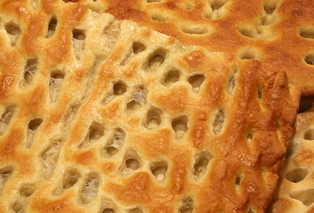
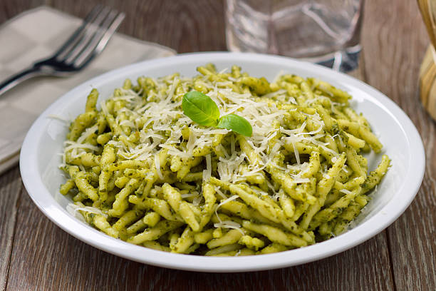
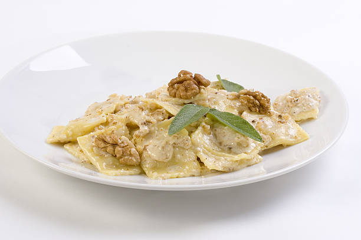

Specialità

Focaccia Genovese
Farina, acqua, olio, sale, lievito

Pesto
Basilico, aglio, pinoli, olio, parmigiano

Sugo di Noci
Noci, latte, pane, parmigiano, aglio
Farinata
Farina di ceci, acqua, olio, sale